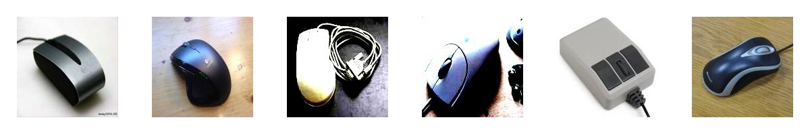
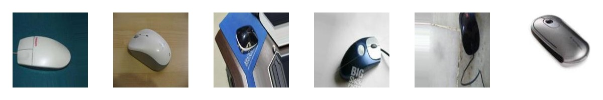
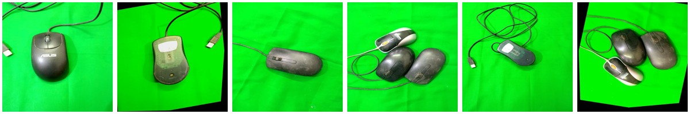
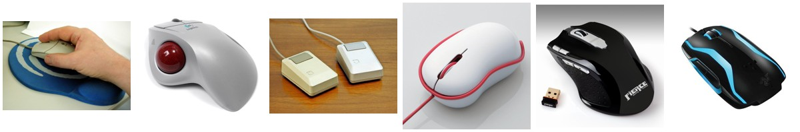
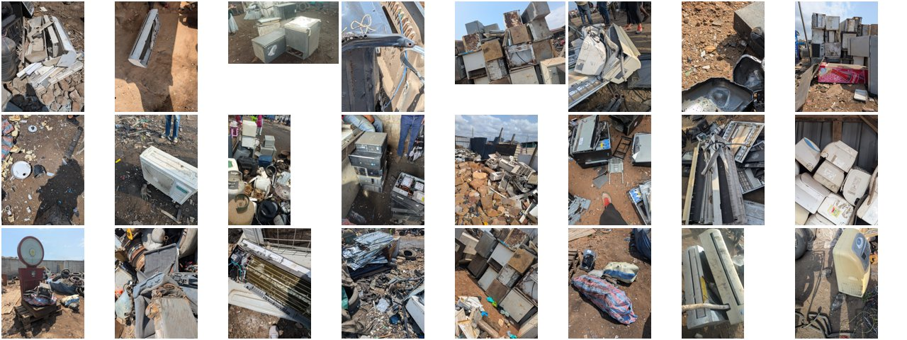

Shortcut learning
Model bisa bergantung pada petunjuk kebetulan.
Model dapat memakai background, resolusi, atau pencahayaan sebagai shortcut. Saat sumber foto berubah, petunjuk itu ikut berubah dan prediksinya gagal.
Data dashboard tidak termuat. Buka halaman ini lewat server (python -m http.server), bukan langsung dari file, lalu muat ulang.
BDC Satria Data 2026 · tim SD2026040000100
3.792 foto BDC dibagi menjadi 16 cluster tanpa label. Foto dari dataset lain langsung ditempatkan ke salah satu cluster, lengkap dengan alasannya.
Coba sendiri
Filter menurut sumber atau hasil, lalu pilih foto. Panel kanan menampilkan cluster foto itu dan tiga alasannya. Galeri ini berupa sampel, jadi proporsi tiap hasil tidak sama dengan data aslinya.
16 cluster
Kami menamai tiap cluster setelah clustering selesai, berdasarkan isi fotonya. Pilih kartu untuk membuka 24 foto contoh dan catatan penanganannya.
Baterai terpisah tiga
Aki, baterai laptop, dan baterai ponsel punya jalur penanganan berbeda.
Layar terpisah dua
Kaca CRT bertimbal dan backlight LCD bermerkuri sama-sama B3, tetapi cara membongkarnya berbeda.
Pemutar audio
Turntable dan pemutar CD/radio terpisah karena bentuknya berbeda.
Mesin cuci
Top-load dan front-load terpisah mengikuti bentuk perangkat.
Satu cluster belum rapi: C15 masih mencampur PCB dan tumpukan e-waste.
Kenapa tidak dipecah jadi 17?Kenapa bukan 17 cluster
Dari 100 iterasi SCMax, K = 17 paling sering terpilih, tetapi kami memakai K = 16. Pilih K = 17 untuk melihat foto yang terpisah.
Ukuran tiap cluster dan stability-nya
Panjang batang = jumlah foto; warna = kategori penanganan. Titik = seberapa utuh cluster saat 20% foto dibuang acak (Jaccard; aman di atas 0,85).
Di layar sempit, geser grafik ke samping.
Peta 3.792 foto BDC menurut cluster
Satu titik = satu foto. Arahkan kursor ke label cluster untuk menyorotnya, klik untuk membuka galeri. Segitiga = 188 foto dari test set BDC.
Di layar sempit, geser peta ke samping.
Komposisi per kategori
Lebar kolom = jumlah foto satu kategori; tinggi kotak = jumlah foto satu cluster.
Tabel 16 cluster
Label BDC dominan dan background putih dihitung setelah clustering, khusus untuk evaluasi.
Cara kerja CMRE
Foto A dan B berasal dari dua dataset berbeda. Pindah langkah lewat tombol, nomor langkah, panah keyboard, atau swipe. Langkah 1 sampai 7 berupa ilustrasi; langkah 8 memakai peta data asli.
Analisis
Pilih langkah untuk membaca rinciannya.
Barang yang sama seharusnya tetap berdekatan walau cara memotretnya berbeda. CMRE berangkat dari tiga gagasan ini.
Shortcut learning
Model dapat memakai background, resolusi, atau pencahayaan sebagai shortcut. Saat sumber foto berubah, petunjuk itu ikut berubah dan prediksinya gagal.
Domain generalization
Representasi yang baik tetap berguna saat jenis foto berubah. Caranya: kurangi perbedaan antarsumber, jaga fitur yang penting.
Residual dan projection
Idenya serupa EPO di kemometrika dan INLP: nuisance variation ditaksir, lalu dibuang lewat orthogonal projection. CMRE menaksirnya dari residual tebakan DINOv3, tanpa label sumber.
Asumsi yang diuji: direction residual dengan varians besar lebih banyak memuat source bias daripada fitur barang. PCA hanya mengukur varians, jadi sebagian detail barang bisa ikut terbuang. Karena itu kami selalu mengecek hasilnya dengan cross-source consistency dan kecocokan dengan jenis barang.
timbulan e-waste Indonesia pada 2021.
KLHK, dikutip Defitri (2022), Waste4Changedari jumlah itu yang dikelola dengan baik.
KLHK, dikutip Defitri (2022)E-waste termasuk sampah spesifik yang mengandung bahan berbahaya dan beracun.
PP No. 27 Tahun 2020Foto katalog, foto objek dengan background beragam, dan foto keseharian. Model bisa mengelompokkan foto menurut gaya pemotretannya dan mengabaikan barangnya.




Isi 3.792 foto BDC
Ukuran sisi terpanjang foto (piksel)
Filename label (hanya untuk evaluasi)
Foto katalog dan foto objek sebelum dan sesudah CMRE
Sebelum CMRE
Sesudah CMRE
Cluster dibentuk dari data BDC saja. Tujuh dataset lain dipakai sesudahnya sebagai data uji: sumber foto berbeda, foto baru, dan barang asing.
Training set · 3.792 foto
3.604 foto train setelah deduplication, ditambah 188 foto e-waste dari test set BDC. Filename label tersedia untuk 2.331 foto dalam 10 kelas dan hanya dipakai untuk evaluasi.
Reference set · 1.794 foto katalog
Foto katalog dengan background putih. Dataset ini menjadi reference: foto sejenis dari sumber lain seharusnya masuk ke cluster yang sama.
Target set · 480 foto objek
Foto objek dengan background dan pencahayaan beragam, untuk menguji apakah barang sejenis tetap satu cluster.
Pelengkap · 499 foto baterai
Foto baterai dari sumber lain, dipakai untuk memeriksa penempatan dan alarm.
Foto lapangan · 1.000 foto
Memuat barang yang tidak ada di BDC, misalnya AC, kulkas, dan kompresor. Dipakai untuk menguji alarm OOD.
Development set · 1.751 crop
10 kelas yang cocok dengan BDC. Aturan ujinya dikunci sebelum data diunduh, lalu ikut dipakai memilih hyperparameter alarm.
Held-out test · 300 crop
Keyboard, ponsel, dan mouse yang cocok dengan BDC, ditambah remote dan headphone sebagai barang asing. Diuji setelah metode di-freeze.
Out-of-domain · 2.917 foto
20 kelas benda kantor dari foto produk dan foto keseharian, untuk melihat perilaku metode di luar e-waste.
Metrik utamanya cross-source consistency (xsrc): seberapa sering foto barang yang sama dari sumber berbeda masuk satu cluster. Nilai 1 berarti selalu.
Cross-source consistency per metode dan dataset
Titik biru tua = CMRE, titik abu-abu = baseline. Sumbu mulai dari 0,3 supaya selisih terbaca. Garis pada CMRE = confidence interval 95%.
Di layar sempit, geser grafik ke samping.
Cross-source consistency pada 11 model tunggal
Model yang belajar dari foto saja (DINOv3) jauh lebih tahan terhadap background bias daripada model yang belajar dari pasangan foto dan teks.
Tiap bagian pipeline dipilih lewat satu skenario uji. Pilih skenario untuk melihat baseline, angka, dan keputusannya.
Cross-source consistency per model tunggal, BDC
Batang biru tua = DINOv3-H+, reference model CMRE.
Vision-language model hanya menempatkan 37 sampai 57 dari 100 foto Bangladesh bersama foto katalog Kaan yang sejenis. DINOv3-H+, yang belajar tanpa teks, mencapai 86.
DINOv3 sendirian belum cukup: di pipeline akhir nilainya 0,758, sedangkan fusion tiga model setelah CMRE mencapai 0,975.
Keputusan: tiga frozen backbone, DINOv3-H+ sebagai reference model.
Ketiga baris membuang 64 direction dengan orthogonal projection yang sama. Bedanya ada di cara menaksir direction itu: tanpa koreksi, dari pasangan foto asli dan versi flip-nya (EPO), atau dari residual tebakan DINOv3 (CMRE).
Keputusan: CMRE, karena tidak butuh label, style proxy, atau pasangan foto.
Batang biru tua = Spectral.
Semua algoritma memakai fitur dan jumlah cluster yang sama, jadi selisihnya murni dari algoritma.
Pada NMI (kecocokan dengan label kelas), beberapa algoritma lain sedikit di atas Spectral, tetapi cross-source consistency-nya lebih rendah. Semua algoritma memakai fitur CMRE; tanpa CMRE nilainya 0,789.
DECMCV hanya memberi cluster untuk 81% foto. DIVIDE dan CTGL dijalankan dengan kode penulisnya.
Keputusan: Spectral clustering pada 15-NN graph.
Rentang hyperparameter dan consistency BDC
Jumlah direction yang dibuang (r) aman di 16 sampai 64. Terlalu sedikit tidak menghapus bias, terlalu banyak ikut membuang fitur barang.
Grafik lengkapnya ada di bagian robustness test.
Keputusan: r = 64 dari aturan 50% varians residual, α = 1, 15-NN.
K pilihan SCMax pada 100 percobaan
Batang biru tua = K final, oranye = K = 17.
Kriteria klasik tanpa label baru memilih K yang berdekatan setelah CMRE:
Keputusan: K = 16. Alasan tidak memakai 17 ada di halaman 16 cluster.
Pemetaan cluster ke kelas ditetapkan dari filename label BDC, lalu di-freeze dan dipakai pada 710 foto lima kelas dataset Bangladesh lengkap. Deteksi OOD memakai 1.443 foto nonelektronik dari dataset yang sama.
Sebagian foto ini ikut dipakai selama pengembangan, jadi angka ini bukan uji buta.
Sembilan percobaan awal SCMax memberi median K = 16. Pada K = 16, Spectral menghasilkan pembagian yang identik di 100 percobaan.
Jumlah cluster K
Consistency dan purity BDC; titik di bawah sumbu = sembilan pilihan SCMax.
Jumlah direction yang dibuang (r)
Sumbu r logaritmik. Hasil stabil pada r = 16 sampai 64.
Algoritma, K = 16
Fitur dan jumlah cluster sama.
Metode terbaru pada fitur yang sama
Rata-rata 3 percobaan. DECMCV hanya memberi cluster pada sebagian foto.
Reference model CMRE
Diurutkan menurut seberapa baik reference model menebak vision-language model (R²). ConvNeXt V2, satu-satunya reference model supervised, memberi hasil paling rendah.
Paired bootstrap: selisih CMRE dikurangi baseline
2.000 ulangan pada foto yang sama. Interval yang memuat nol berarti selisihnya tidak signifikan.
Foto yang jauh dari semua foto BDC ditandai untuk dicek petugas. Skornya jarak ke nearest neighbor ke-10; threshold-nya persentil ke-95 jarak antarfoto BDC.
Foto yang ditandai, per kategori
Dua panel memakai skala 0 sampai 100% yang sama.
Foto yang ditandai, per sumber
Isi kategori tiap sumber berbeda, jadi selisih ini bukan efek sumber foto saja.

Foto GIZ yang ditandai didominasi AC, kulkas, dan kompresor. Alat penukar suhu seperti ini belum ada di data BDC.